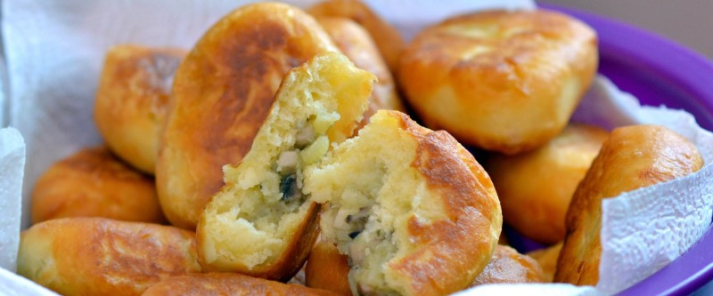

приготовление:
-
Смешать 300 мл кефира, 1 ч. л. соды, 1 ч. л. соли, 1 ч. л. сахара и 1 ст. л. растительного масла. Постепенно добавить 400 г муки. Когда перемешивать ложкой станет трудно, продолжить вымешивать руками. Тесто должно оставаться мягким. Постепенно вмешать ещё 2 ст. л. растительного масла, накрыть тесто плёнкой и оставить на 30 минут.
-
Сварить 6 картофелин до готовности.
-
Пока варится картофель, мелко нарезать 1 луковицу и обжаривать её на среднем огне с небольшим количеством оливкового масла около 5 минут. Добавить 200 г мелко нарезанных шампиньонов и 1 ст. л. сливочного масла (≈ 14 г). Посолить, поперчить и обжаривать ещё около 10 минут.
-
Размять картофель в пюре с 2 ст. л. оливкового масла. Добавить 30 г нарубленной зелени — смеси шнитт-лука и укропа, затем добавить лук с грибами и хорошо перемешать.
-
Разделить тесто на небольшие шарики. Каждый шарик раскатать, выложить в центр картофельно-грибную начинку и сформировать пирожок. Обжарить на сковороде с растительным маслом, сначала выложив швом вниз, с двух сторон до золотистой корочки.